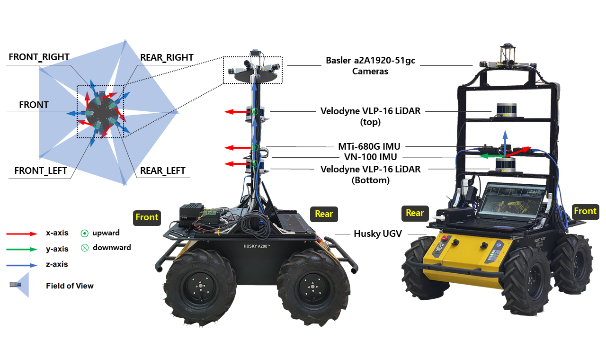

Abstract
To ensure secure and dependable mobility in environments shared by humans and robots, social navigation robots should possess the capability to accurately perceive and predict the trajectories of nearby pedestrians.
In this paper, we present a novel dataset of pedestrian trajectories, referred to as Social Interactive Trajectory (SiT) dataset, which can be used to train pedestrian detection, tracking, and trajectory prediction models needed to design social navigation robots. Our dataset includes sequential raw data captured by two 3D LiDARs and five cameras covering a 360-degree view, two IMU sensors, and RTK, as well as annotations including 2D & 3D boxes, object classes, and object IDs. Thus far, various human trajectory datasets have been introduced to support the development of pedestrian motion forecasting models. Our SiT dataset differs from these datasets in the following two respects. First, whereas the pedestrian trajectory data in other datasets was obtained from static scenes, our data was collected while the robot navigates in a crowded environment, capturing human-robot interactive scenarios in motion.
Second, our dataset has been carefully organized to facilitate training and evaluation of end-to-end prediction models encompassing 3D detection, 3D multi-object tracking, and trajectory prediction. This design allows for an end-to-end unified modular approach across different tasks.
We have introduced a comprehensive benchmark for assessing models across all aforementioned tasks, and have showcased the performance of multiple baseline models as part of our evaluation. Our dataset provides a strong foundation for future research in pedestrian trajectory prediction, which could expedite the development of safe and agile social navigation robots.
Indoor
×

×

Robot setup

We remotely operated Clearpath's Husky UGV platform to collect different scenes of robot driving data. The robot has four large wheels that allow it to operate in a variety of environments. As shown in figure, the robot was equipped with the following sensors:
- 2 x Velodyne VLP-16 rotating 3D LiDARs with 16 channels, 0.09 degree angular resolution, 30 degree vertical field of view, 2 cm distance accuracy, a point cloud rate of approximately 1.3 million points per second, and both operating at 10 Hz.
- 5 x Basler a2A1920-51gc PRO GigE cameras capturing images at a high resolution of 1920 x 1200, a field of view of 79 degree (vertical) x 54.3 degree (horizontal), and covering the entire 360-degree area at 10 Hz.
- 1 x MTi-680G IMU & RTK offering position and orientation and global positioning data at 20 Hz in 10 mm +1 ppm CEP, 0.5 degree RMS error of yaw, and 0.2 degree RMS error of roll, pitch.
- 1 x VectorNav VN-100 IMU providing position and orientation at 200 Hz with degree RMS error of pitch and roll, and 2.0 degree RMS error of yaw.
Semantic Map
Using scene context information has been proven beneficial in enhancing trajectory prediction models.
To facilitate this, the SiT dataset offers multi-layered semantic maps that encompass a wide range of scene information.
The semantic maps are generated through a two-step process.
Initially, point cloud maps are constructed, followed by manual segmentation using the ASSURE mapping.
We provide multi-layered semantic maps in PNG and Json formats.